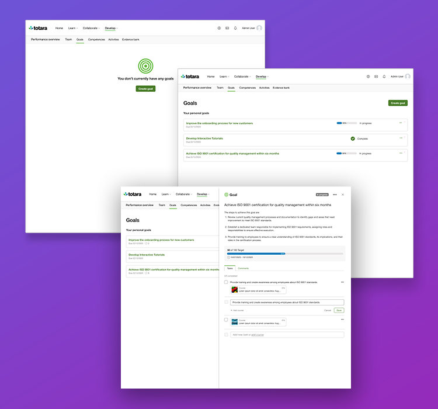
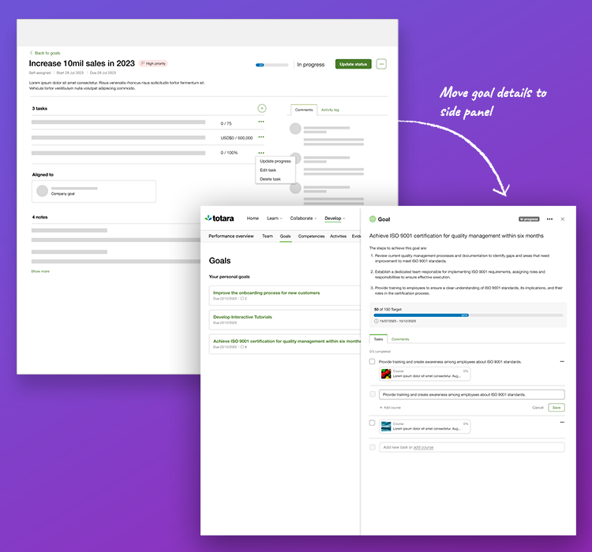
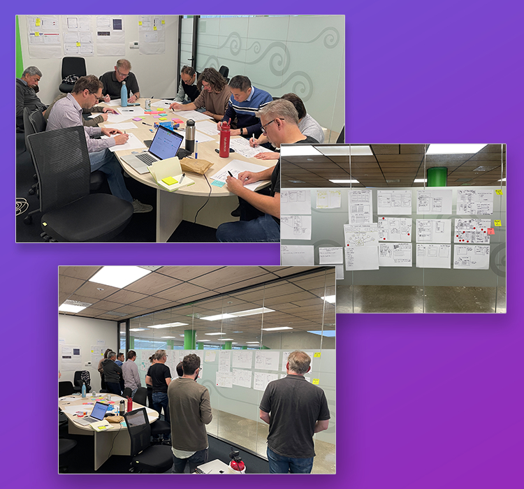
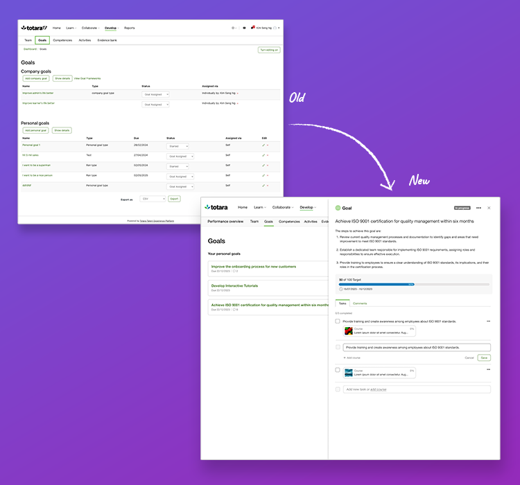
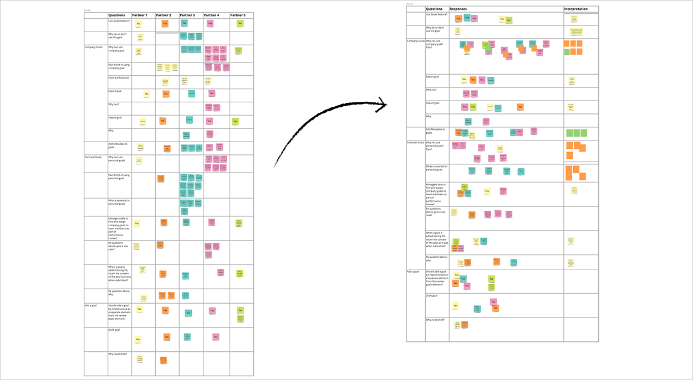
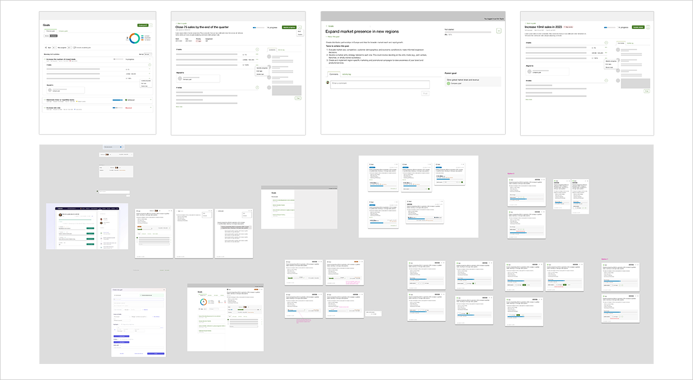
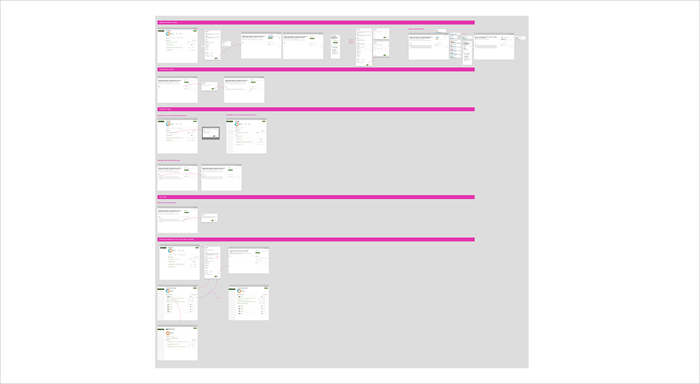
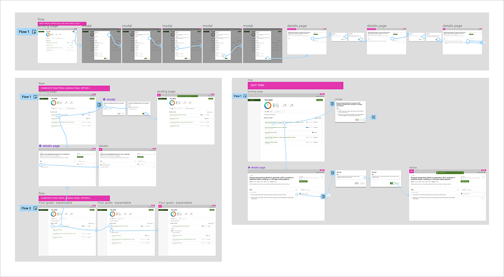
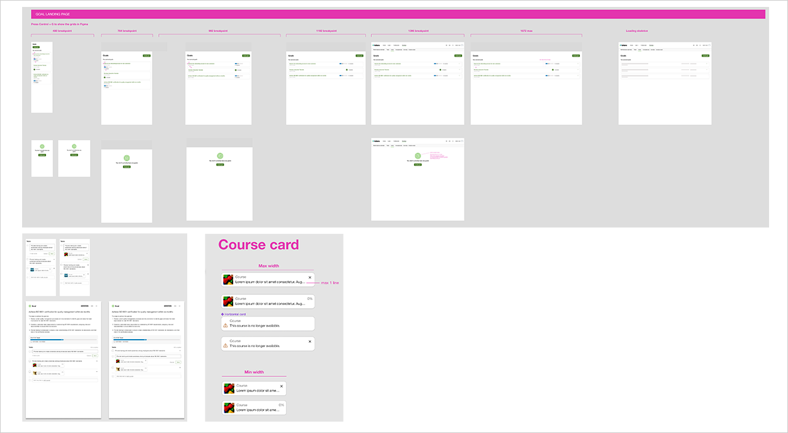

The primary objective of this project is to boost the activation and utilisation of Goals. Currently, only 62 TXP subscribers utilise personal goals, with just 22 doing so regularly. Our target for v18 is to achieve a 60% activation rate among paid subscribers.
A key challenge we’ve identified is the underutilisation of legacy goals due to their limited features and inefficient workflow for managing goal-setting and tracking processes. By addressing these shortcomings, we aim to enhance user engagement and drive greater adoption of the goal-oriented features in our platform.

Main areas of responsibility:

Implementing a change in design direction for the Totara Goals MVP based on stakeholder feedback posed a time-sensitive challenge. As part of this change, new patterns and components were supposed to be introduced four weeks before the major release.
To meet this tight timeline, we swiftly conceptualised a new UI within days to assess the effort and technical feasibility. Additionally, a fallback option was concurrently developed to mitigate risks in case there wasn’t sufficient time to create the required new components.

I conducted in-depth research on Goals/OKRs products, leveraging the research and users’ feedback , I led an ideation workshop with the team to generate diverse ideas. Next, I translated these ideas into high-level designs and actively sought feedback from stakeholders, including the Product Manager, Product Owner, and Tech Lead.
Following several design iterations, I created a high-fidelity interactive prototype for usability testing to improve and gather evidence that supports the proposed design.

The feature has been released in T18 and has received positive feedback from our partners. Customers expressed that the new Totara goals not only look modern and easy to use but also meet their needs, and we heard that customers have decided to upgrade. We have also started receiving feedback and ideas for future improvements.
I have learned that regularly involving stakeholders and staying flexible is key to keeping everyone on the same page, adapting to changes, and overcoming unexpected obstacles, all of which are essential for a successful project.
Understanding why our customers are not using the Goals feature comes from user research. This helps create more user-centric and effective products that meet customer needs and drive adoption.

Exploring different ideas based on the research.

Explored and presented different workflows to the stakeholders for feedback. These are just some of the ideas after a few design iterations.

Created interctive prototypes for usability testing and feeback.

Created the detailed design spec for the developer, this includes different breakpoints for desktop and mobile view.
